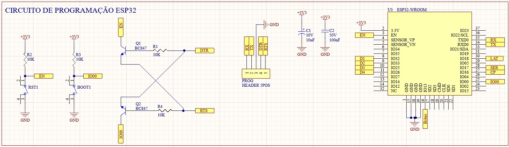

Programando o ESP32 "Raiz": Do Chip Puro ao Firmware com VS Code e PlatformIO
Como economizar espaço e custo programando apenas o chip via FTDI e ESP-IDF.

Quando começamos com microcontroladores, é normal usar aquelas placas de desenvolvimento prontas (como o NodeMCU ou ESP32 DevKit) conectadas via USB. Elas são ótimas, mas têm um problema: ocupam muito espaço e custam mais caro para um produto final.
No post de hoje, vou mostrar meu fluxo de trabalho profissional: programar diretamente o chip ESP32 (standalone) usando um conversor FTDI e o ambiente de desenvolvimento mais robusto do mercado: VS Code + PlatformIO com framework ESP-IDF em C/C++.
1. O Ambiente: VS Code + PlatformIO 💻
Esqueça a IDE do Arduino. Para ter controle total sobre o hardware, uso o Visual Studio Code com a extensão PlatformIO.
Essa combinação permite:
- IntelliSense: O código se completa sozinho (o que ajuda muito com as funções complexas do ESP-IDF).
- Organização: Separar o código em vários arquivos `.c` e `.h` de forma profissional.
- Framework ESP-IDF: Acesso direto à API oficial da Espressif, permitindo usar os dois núcleos do processador (FreeRTOS), Bluetooth e Wi-Fi com máxima performance.
2. O Segredo: Conversor FTDI 🔌
Como o chip ESP32 puro não tem porta USB, precisamos de uma "ponte" para conversar com o computador. É aqui que entra o Módulo FTDI (USB para Serial).
O FTDI traduz os dados da USB do computador para os pinos TX e RX que o microcontrolador entende. A conexão básica é cruzada:
- TX do FTDI liga no RX do ESP32.
- RX do FTDI liga no TX do ESP32.
- GND tem que ser comum entre os dois!
3. O Circuito de Programação (O "Pulo do Gato") 🐱👤
Não basta ligar os fios. Para o ESP32 aceitar um novo código, ele precisa entrar no Modo de Boot (Download Mode). Nas placas prontas, um chip faz isso sozinho. No nosso caso, precisamos forçar isso via hardware.
Preparei esse circuito de gravação que uso nas minhas bancadas. Ele garante que o chip entre no modo correto:
A Lógica do Boot:
- Pino GPIO 0 deve estar ligado ao GND (nível baixo).
- Pino EN (Enable/Reset) recebe um pulso de GND para reiniciar o chip.
- Quando o chip acorda e vê o GPIO 0 no GND, ele aguarda o código novo vindo do FTDI.
Com esse setup, consigo desenhar minhas próprias PCBs (como a da vending machine que estou fazendo!) colocando apenas o chip ESP32, o que deixa a placa mais barata e compacta, plugando meu gravador externo apenas na hora de atualizar.
Quer ver o código em C rodando nesse setup? Fique ligado nos próximos posts ou confira meu GitHub!